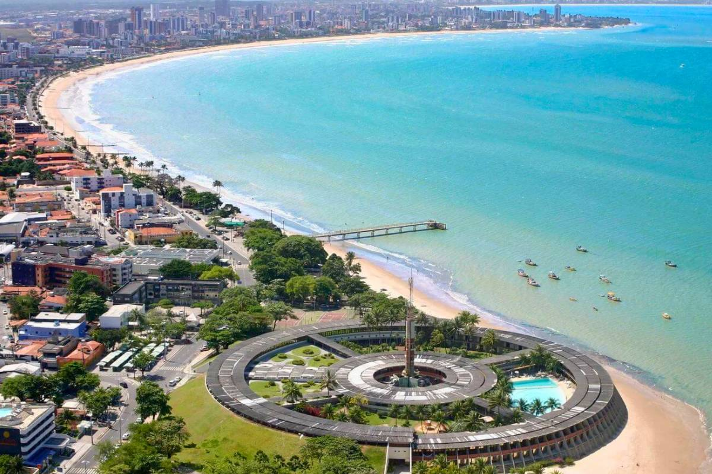
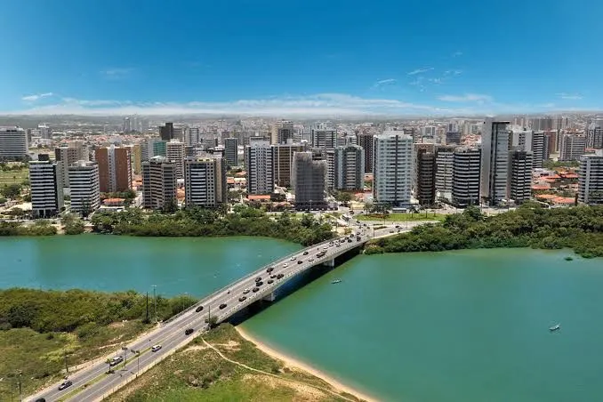
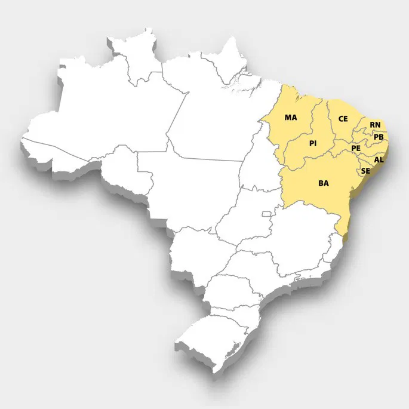

Estados do Nordeste
- Maranhão

- Piauí

- Ceará

- Rio Grande do Norte

- Paraíba
- Pernambuco

- Alagoas

- Sergipe 
- Bahia

A Região Nordeste é uma das cinco regiões do Brasil, reconhecida por sua imensa riqueza cultural, belas paisagens naturais e um povo acolhedor e cheio de alegria. Composta por nove estados — Alagoas, Bahia, Ceará, Maranhão, Paraíba, Pernambuco, Piauí, Rio Grande do Norte e Sergipe —, a região apresenta uma grande diversidade geográfica, que vai desde o árido sertão até o exuberante litoral, repleto de praias paradisíacas banhadas pelo Oceano Atlântico.
Além de sua impressionante beleza natural, o Nordeste destaca-se pela sua gastronomia típica, marcada por sabores fortes e ingredientes regionais, como o dendê, a tapioca, o cuscuz e o acarajé. A cultura nordestina é uma das mais ricas do país, refletida em suas festas populares, como o São João, o Carnaval de Salvador e o Bumba Meu Boi, que atraem turistas de todo o Brasil e do mundo.
A música e a literatura também têm papel de destaque, com gêneros e artistas que representam o espírito nordestino, como o forró, o baião e grandes nomes como Luiz Gonzaga, Gilberto Gil e Caetano Veloso. Mesmo enfrentando desafios sociais e climáticos, o Nordeste é símbolo de resistência, criatividade e hospitalidade, sendo uma parte essencial da identidade brasileira.
A cultura nordestina é uma das mais ricas e expressivas do Brasil, marcada por uma combinação única de tradições, religiosidade, arte e alegria. Suas festas populares são conhecidas nacional e internacionalmente, como o São João, comemorado com danças típicas, fogueiras, comidas à base de milho e o som contagiante do forró. O Carnaval de Salvador, por sua vez, é um dos maiores do mundo, reunindo multidões ao som do axé e dos trios elétricos, enquanto o Bumba Meu Boi, especialmente popular no Maranhão, mistura teatro, dança e música em uma celebração que retrata o folclore e a criatividade do povo nordestino.
A música regional é outro pilar fundamental da identidade nordestina. Gêneros como o forró, o baião, o xote, o xaxado e o maracatu expressam o cotidiano, as alegrias e as lutas do povo da região. Artistas consagrados como Luiz Gonzaga, Dominguinhos, Elba Ramalho, Alceu Valença e Jackson do Pandeiro contribuíram para levar o som e a alma do Nordeste a todo o Brasil.
Além da música e das festas, o Nordeste é um celeiro de manifestações culturais diversas, como o cordel, a literatura popular escrita em versos rimados, e o artesanato, que utiliza materiais como barro, renda, ouro e madeira para representar o dia a dia e a fé do povo. A culinária nordestina também faz parte dessa riqueza cultural, com pratos típicos como a carne de sol, a tapioca, o vatapá e a feijoada nordestina, que encantam paladares com seus sabores marcantes.
A culinária do Nordeste é uma das mais ricas, variadas e saborosas do Brasil, resultado da mistura de influências indígenas, africanas e portuguesas que, ao longo dos séculos, formaram uma identidade gastronômica única. Entre os pratos mais conhecidos estão o acarajé, o vatapá, o baião de dois, a carne de sol e a tapioca, todos marcados por temperos fortes, aromas intensos e uma combinação de ingredientes regionais.
Cada estado nordestino possui suas especialidades e sabores próprios, que refletem as tradições e os recursos locais. Na Bahia, por exemplo, predominam pratos com influência africana, como o acarajé, o caruru, o vatapá e o abará, preparados com azeite de dendê e pimenta. No Ceará e no Rio Grande do Norte, a carne de sol acompanhada de feijão-verde, macaxeira ou arroz é uma das refeições mais tradicionais. Já em Pernambuco, destaca-se a diversidade: do bolo de rolo ao arrumadinho e à caldeirada de peixe.
O sertão nordestino também tem sua culinária característica, marcada pela criatividade em meio às condições do clima semiárido. O uso da mandioca, do milho, do feijão e do queijo é muito comum em pratos como o cuscuz nordestino, a paçoca de carne e o rubacão. No litoral, os frutos do mar são protagonistas, com moquecas, ensopados e peixadas que encantam moradores e visitantes.
Além da comida, as bebidas e sobremesas típicas também merecem destaque. A rapadura, o bolo de milho, o pé de moleque, o doce de caju e a cocada são exemplos de quitutes tradicionais que adoçam a mesa nordestina. Já a bebida mais apreciada é a famosa cachaça artesanal, produzida em várias regiões e utilizada em diversas receitas.
Os destinos mais procurados estão Jericoacoara, no Ceará, famosa por suas dunas, lagoas cristalinas e pelo pôr do sol mais bonito do país; Porto de Galinhas, em Pernambuco, com suas piscinas naturais de águas mornas e transparentes; os Lençóis Maranhenses, no Maranhão, uma paisagem única formada por dunas e lagoas sazonais; e Salvador, na Bahia, conhecida por sua arquitetura colonial, festas populares, como o Carnaval, e sua forte herança afro-brasileira.
As festas tradicionais, como o São João de Caruaru e Campina Grande, atraem milhares de pessoas todos os anos, oferecendo uma imersão na cultura nordestina por meio da música, da dança, da comida e das tradições populares.